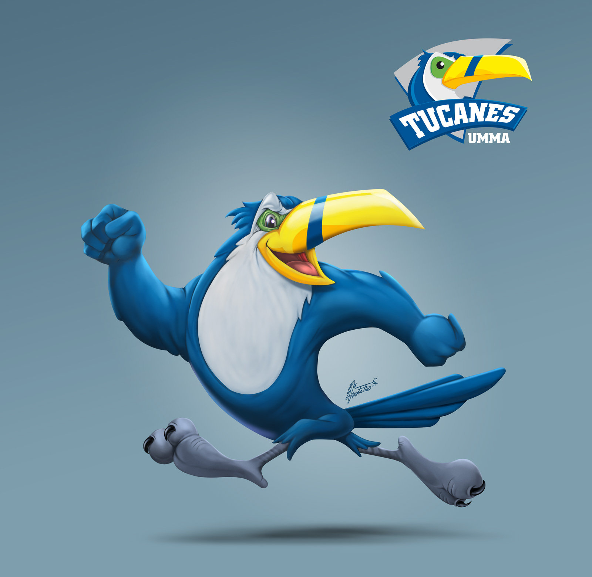

Misión
Es misión de la Universidad Mundo Maya: Preparar profesionistas que la sociedad demande, considerando en su formación, conocimientos de actualidad, preservación de la cultura y fomento de los valores éticos de la persona.
Visión
Es visión de la Universidad Mundo Maya: Adaptarse con diligencia a los cambios, avances y progreso de la humanidad y ser competitiva entre las instituciones educativas de nivel superior de la República Mexicana en la transmisión, generación y
aplicación de los conocimientos y tecnologías de actualidad.
Objetivos

- Preparar profesionistas con conocimientos que le permitan mediante la investigación científica y de acuerdo a su formación, participar en la búsqueda de soluciones a los problemas sociales, económicos tecnológicos, etcétera que afecten
a la sociedad.
- Fomentar la preparación acorde con los avances científicos y tecnológicos.
- Formar profesionales, investigadores y profesores que desarrollen la ciencia y tecnología, que la humanidad requiere.
- Impulsar el desarrollo armónico de la enseñanza, la investigación y la divulgación de las ciencias y técnicas, la cultura y las artes entre la comunidad institucional.
- Fomentar la preparación integral del educando, sumando a sus enseñanzas curriculares la práctica deportiva y el desarrollo intelectual en la búsqueda del bien común.